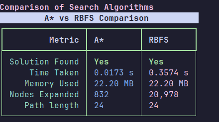

حل پازل N تایی با الگوریتمهای A* و RBFS
این سند به بررسی و مقایسه دو الگوریتم جستجوی آگاهانه، A* (اِی استار) و RBFS (جستجوی بازگشتی بهترین-اولین)، برای حل مسئلهی پازل N تایی میپردازد. هدف، ارزیابی عملکرد این دو الگوریتم از نظر حافظه مصرفی، سرعت اجرا، و تعداد گرههای گسترشیافته با افزایش اندازهی پازل (\(N\)) و تعداد حرکات تصادفی (scramble amount) است.
مقدمهای بر پازل N تایی
پازل N تایی یک پازل کلاسیک است که شامل یک قاب \(N \times N\) با \(N^2 - 1\) کاشی شمارهگذاریشده و یک خانه خالی است. هدف این است که با حرکت دادن کاشیها به فضای خالی، پازل را از یک حالت اولیه به یک حالت هدف مرتبشده برسانیم.
الگوریتمهای مورد استفاده
1. الگوریتم A* (A-Star)
A* یک الگوریتم جستجوی گراف است که مسیر با کمترین هزینه را از گره شروع به گره هدف پیدا میکند. این الگوریتم از یک تابع هیوریستیک برای تخمین هزینه از گره فعلی تا هدف استفاده میکند. تابع ارزیابی \(f(n)\) برای هر گره \(n\) به صورت زیر تعریف میشود:
که در آن: \(g(n)\) هزینه واقعی مسیر از شروع تا گره \(n\) و \(h(n)\) تخمین هیوریستیک هزینه از گره \(n\) تا هدف است. A* بهینه بودن را تضمین میکند اگر هیوریستیک آن admissible باشد.
2. الگوریتم RBFS (Recursive Best-First Search)
RBFS یک الگوریتم جستجوی بهترین-اولین بازگشتی است که سعی میکند عملکرد A* را با حافظه خطی شبیهسازی کند. این الگوریتم از یک مقدار آستانه \(f_{\text{limit}}\) استفاده میکند و مسیرهایی را که از این آستانه فراتر میروند، بهطور موقت کنار میگذارد. این روش مصرف حافظه را کاهش میدهد اما ممکن است منجر به بازگسترش مکرر گرهها شود.
مروری بر پیادهسازی
برنامه با استفاده از زبان پایتون و کتابخانههایی مانند psutil برای نظارت بر منابع و rich برای نمایش خروجی پیادهسازی شده است. در ادامه، بخشهای کلیدی کد مرور میشوند.
کلاس PuzzleState
فاصله منهتن بهعنوان تابع هیوریستیک استفاده میشود و مجموع فواصل عمودی و افقی هر کاشی از موقعیت هدفش را محاسبه میکند. این هیوریستیک admissible است، زیرا هزینه واقعی حرکت کاشیها را بیش از حد تخمین نمیزند.
این کلاس وضعیت یک گره در فضای جستجو را نمایش میدهد. این کلاس شامل خود بورد پازل، تعداد حرکات تا اینجا (هزینه \(g\))، و ارجاع به گره والد برای بازسازی مسیر است. همچنین تابع هزینه \(f(n)\) و فاصله منهتن در این کلاس محاسبه میشوند.
class PuzzleState:
def __init__(self, board: List[List[int]], size: int, moves: int = 0, parent: Optional['PuzzleState'] = None):
self.board = board
self.size = size
self.moves = moves
self.parent = parent
self.manhattan = self._calculate_manhattan()
self.f_cost_value: float = 0.0 # Used by RBFS
def _calculate_manhattan(self) -> int:
# ... (Implementation as shown previously) ...
total_distance = 0
for i in range(self.size):
for j in range(self.size):
value = self.board[i][j]
if value != 0:
target_row = (value - 1) // self.size
target_col = (value - 1) % self.size
total_distance += abs(i - target_row) + abs(j - target_col)
return total_distance
def f_cost(self) -> int:
return self.moves + self.manhattan
def __lt__(self, other: 'PuzzleState') -> bool:
return self.f_cost() < other.f_cost()
الگوریتم A*
پیادهسازی A* از یک صف اولویت (min-heap) برای مدیریت لیست باز (گرههایی که باید بررسی شوند) و یک مجموعه (set) برای لیست بسته (گرههایی که قبلاً بررسی شدهاند) استفاده میکند تا از بررسی تکراری گرهها جلوگیری کند.
def a_star_search(initial_board: List[List[int]], size: int) -> Tuple[Optional[PuzzleState], float, float, int]:
# ... (setup) ...
initial_state = PuzzleState(initial_board, size)
open_list: List[PuzzleState] = [initial_state]
heapq.heapify(open_list)
closed_set: PySet[int] = set()
while open_list:
current_state = heapq.heappop(open_list)
if current_state.is_goal(): # Simplified goal check
return current_state, ... # Return solution and metrics
current_key = hash(current_state)
if current_key in closed_set:
continue
closed_set.add(current_key)
nodes_expanded += 1
for neighbor in get_neighbors(current_state):
if hash(neighbor) not in closed_set:
heapq.heappush(open_list, neighbor)
return None, ... # No solution found
الگوریتم RBFS
تابع بازگشتی RBFS یک گره و یک محدودیت هزینه \(N \times (N-1)\) را میگیرد. این تابع فرزندان گره را بر اساس هزینه \(f\) مرتب کرده و به صورت بازگشتی بهترین فرزند را تا زمانی که هزینه آن از \(N \times (N-1)\) کمتر باشد، کاوش میکند. اگر مسیر فعلی بیش از حد گران شود، الگوریتم به عقب برمیگردد و مسیر جایگزین بعدی را امتحان میکند.
def _rbfs_recursive(state: PuzzleState, f_limit: float, ...):
if state.is_goal():
return state, state.f_cost_value
successors = get_neighbors(state)
if not successors:
return None, float('inf')
for s_node in successors:
s_node.f_cost_value = max(s_node.moves + s_node.manhattan, state.f_cost_value)
while True:
successors.sort(key=lambda x: x.f_cost_value)
best_successor = successors[0]
if best_successor.f_cost_value > f_limit:
return None, best_successor.f_cost_value
alternative_f_value = successors[1].f_cost_value if len(successors) > 1 else float('inf')
result_state, best_f_updated = _rbfs_recursive(
best_successor, min(f_limit, alternative_f_value), ...
)
best_successor.f_cost_value = best_f_updated
if result_state is not None:
return result_state, best_f_updated
مقایسه نتایج و معیارها
نحوه اندازهگیری معیارها
برای مقایسه عینی دو الگوریتم، معیارهای زیر به دقت اندازهگیری شدند:
- زمان اجرا (Time): با استفاده از ماژول
timeپایتون، زمان شروع و پایان هر الگوریتم ثبت و تفاوت آنها به عنوان زمان کل اجرا گزارش میشود. - حافظه مصرفی (Memory): با استفاده از کتابخانه
psutil، میزان حافظه RSS (Resident Set Size) فرایند پایتون در پایان اجرای الگوریتم اندازهگیری میشود. این معیار نشاندهنده حافظه فیزیکی اشغال شده است. - گرههای گسترشیافته (Nodes Expanded): یک شمارنده در حلقه اصلی هر الگوریتم قرار داده شده است که هر بار یک گره از لیست باز برای تولید فرزندانش انتخاب میشود، یک واحد به آن اضافه میکند.
- طول مسیر جواب (Path Length): تعداد حرکات لازم برای رسیدن از حالت اولیه به حالت هدف.
ارائه خروجی با کتابخانه Rich
برای نمایش نتایج در ترمینال به شکلی خوانا و جذاب، از کتابخانه rich استفاده شده است. این کتابخانه امکان ایجاد جداول رنگی، پنلها و قالببندیهای متنی زیبا را فراهم میکند که مقایسه نتایج را بسیار سادهتر میسازد.
img/...) قرار دارند.
پازل 2x2

پازل 3x3
پازل 3x3 (200 حرکت)
پازل 5x5 (80 حرکت)

پازل 5x5 (120 حرکت)

پازل 6x6

تحلیل نتایج
| معیار | A* | RBFS |
|---|---|---|
| زمان اجرا (ثانیه) | 0.2617 | 59.3477 |
| حافظه مصرفی (MB) | 106.38 | 1.11 |
| تعداد گرههای گسترشیافته | 49,999 | 11,675,490 |
| طول مسیر جواب | 38 | 38 |
با توجه به نتایج مشاهدهشده در تصاویر، A* به طور مداوم گرههای کمتری را نسبت به RBFS گسترش میدهد، که نشاندهنده کارایی بالاتر آن در کاوش فضای جستجو است. در مقابل، RBFS به دلیل بازگسترش مکرر گرهها، تعداد گرههای بسیار بیشتری را بررسی میکند. تفاوت حافظه در این نمونهها محسوس نیست، اما این محدودیت ابزار اندازهگیری است و در تئوری A* حافظه بسیار بیشتری مصرف میکند.
مقایسه مقیاسپذیری
برای بررسی مقیاسپذیری الگوریتمهای A* و RBFS، نمودارهای زیر عملکرد آنها را بر اساس اندازه پازل (\(N\)) و تعداد حرکات تصادفی (scramble amount) نشان میدهند. این نمودارها زمان اجرا، حافظه مصرفی، تعداد گرههای گسترشیافته و طول مسیر جواب را برای پازلهای مختلف مقایسه میکنند.
بهینهسازی برای پازلهای بزرگ: پیادهسازی موازی با Go
با افزایش اندازه پازل \(N > 4\)، محدودیتهای پایتون از نظر سرعت اجرا آشکارتر میشود. برای حل پازلهای پیچیدهتر، یک پیادهسازی چندنخی در زبان Go به دلیل کارایی بالا، همزمانی داخلی و مدیریت حافظه دقیق، راهکار بسیار بهتری است. این رویکرد امکان توزیع بار کاری بین چندین هسته پردازنده را فراهم کرده و سرعت حل مسائل بزرگ را به شدت افزایش میدهد.
نتیجهگیری
انتخاب بین الگوریتمهای A* و RBFS یک مصالحه (trade-off) کلاسیک بین فضا و زمان را به نمایش میگذارد. هر دو الگوریتم بهینه هستند و کوتاهترین مسیر را پیدا میکنند، اما روش رسیدن آنها به جواب و منابعی که مصرف میکنند متفاوت است.
- A*، انتخاب مطمئن با حافظه کافی: الگوریتم A* به دلیل استفاده از لیست بسته، هر گره را تنها یک بار گسترش میدهد. این ویژگی آن را به کارآمدترین الگوریتم از نظر تعداد گرههای بررسیشده تبدیل میکند. اگر حافظه سیستم محدودیتی ایجاد نکند، A* تقریباً همیشه انتخاب بهتری است، زیرا هم سریعتر (از نظر محاسباتی) و هم قابل پیشبینیتر عمل میکند. با این حال، مشکل اصلی آن رشد نمایی حافظه است. برای پازلهای بزرگ یا پیچیده، لیست باز و بسته میتوانند به سرعت تمام حافظه RAM را اشغال کرده و برنامه را متوقف کنند.
- RBFS، راهکار حافظه-محدود: الگوریتم RBFS با هوشمندی مشکل حافظه A* را حل میکند. با داشتن حافظه مصرفی خطی متناسب با عمق جواب، این الگوریتم میتواند فضاهای جستجوی بسیار بزرگی را که برای A* غیرممکن است، کاوش کند. اما این مزیت به قیمت بازگشت و بازگسترش مکرر گرهها تمام میشود. RBFS ممکن است مجبور شود بارها و بارها یک زیردرخت را از نو بسازد و کاوش کند، که منجر به افزایش شدید تعداد کل گرههای گسترشیافته و در نتیجه، زمان اجرای طولانیتر میشود. این "فراموشی" مسیرهای کاوششده، پاشنه آشیل آن است.
- نقش حیاتی هیوریستیک: عملکرد هر دو الگوریتم به شدت به کیفیت تابع هیوریستیک بستگی دارد. یک هیوریستیک دقیقتر (که به هزینه واقعی نزدیکتر باشد) فضای جستجو را بهتر هدایت کرده و باعث کاهش چشمگیر گرههای گسترشیافته و زمان اجرا برای هر دو الگوریتم میشود.
- فراتر از پایتون: همانطور که اشاره شد، برای مسائل واقعاً بزرگ، محدودیتهای ذاتی پایتون ما را به سمت راهحلهای قویتر سوق میدهد. پیادهسازی موازی در زبانی مانند Go نه تنها سرعت را افزایش میدهد، بلکه امکان استفاده از معماریهای چند هستهای مدرن را برای حل مسائلی فراهم میکند که پیش از این غیرقابل حل به نظر میرسیدند.
در نهایت، A* برای مسائل با اندازه متوسط که در حافظه جای میگیرند، ایدهآل است. RBFS زمانی وارد میدان میشود که با محدودیت شدید حافظه روبرو هستیم. برای کاربردهای عملی در مقیاس بزرگ، ترکیبی از الگوریتمهای بهتر مانند IDA* (که مزایای حافظه کم جستجوی عمقی را با هدایت هیوریستیک A* ترکیب میکند) و پیادهسازیهای بهینه در زبانهای سطح پایین، رویکرد استاندارد محسوب میشود.